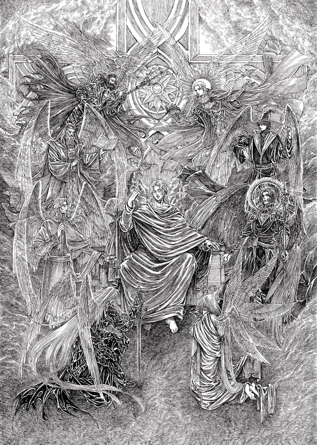

Overview
Other Identities: Ancient Sun God, Adam, True Creator, Sasrir
Let there be light!
Ancient Sun God, Book 1, chapter 1033
The Ancient Sun God, real name Grisha Adam, is the human Survivor from the Pre-Epoch who woke up from the Chaos Sea in Chernobyl at the beginning of the Second Epoch. "He" became the human savior who killed the Ancient Gods and led humans to dominate the world in the Third Epoch.
"He" was a Quasi-God Almighty,15 and was extremely close to being a Great Old One.1Book 1, chapter 1357 "He" had accommodated all required Uniquenesses and Sequence 1 Characteristics of all 5 pathways, and was almost equivalent to the owner of the Chaos Sea through Sasrir and the First Blasphemy Slate. "He" also possessed the the Uniqueness of Error.2
"He" had eight Kings of Angels following "Him": the Dark Angel Sasrir, the Angel of Fate Ouroboros, the Red Angel Medici, the Wind Angel Leodero, the Wisdom Angel Herabergen, the White Angel Aucuses, as well as "His" two sons, the Angel of Time Amon and the Angel of Imagination Adam.
Honorific Name
The Lord that Created Everything; The Omnipotent and Omniscient; The Source of Everything Great; The Beginning and The End; The God of Gods; Ruler of the vast Astral World (创造一切的主， 全知全能者， 一切伟大的根源， 开始，也是结束， 众神之神， 浩瀚星界的支配者)
Symbol
The symbol of the Ancient Sun God is the grayish-white crosses and a sculpture of God bearing the cross.17
Appearance
Pre-Epoch
His original body had blonde hair and blue eyes.3Archive:Cuttlefish's WeChat Comments and Answers He belonged to the relatively tall category, about 190 cm or 6.23 feet.4Archive:Cuttlefish's WeChat Comments and Answers
After waking up from the Chaos Sea in Second Epoch
A figure walked out-a man. He wore a black clergyman robe and had a silver crucifix hung on his chest. This man's hair wasn't long and was mainly raven-black in color. There was a faint hint of blond at the roots of his hair. His eyes were pure gold in color, and his skin was rather white. He had a deep outline and pronounced eye sockets. He looked quite similar to the people of the Northern Continent.
Book 1, chapter 1033
This figure was dressed in a simple white robe. It was difficult to see his face clearly, and it was impossible to tell his age. One could only vaguely tell that he was a man. A bright halo hung at the back of his head like a miniature sun. Beneath his feet was an illusory clock that was divided into twelve segments. Each segment represented a different symbol of time. Behind him, there was a shadow that looked like a curtain. Eyes seemed to be looking out from the shadow.
Book 1, chapter 1343
"His" appearance (eye color and hair color) changed due to influences from Beyonder characteristics.5
History
Pre-Epoch
Modern Earth
He was a naturally talented researcher6Archive:Discord International AMA with the author4 5 working at a research institute in Chernobyl. His nationality was a bit sensitive.18 While working in a research facility, "He" and other colleagues were researching the disappearance of oil. When the apocalypse began, the facility "He" worked at was one of the first sites that encountered supernatural phenomena due to its proximity to the Chaos Sea. After falling inside the Chaos Sea, "He" was put into an unconscious or sealed state.7Book 1, chapter 1222
Second Epoch
In this era, the world was ruled by eight Ancient Gods. Humans were subordinates or even slaves of Giants, Elves, and Sanguines.19 The Ancient Sun God became a deity based on the Sun, collecting the Uniquenesses and the minimum required Sequence 1 Beyonder characteristics of the corresponding pathways20 from fighting the Ancient Gods.
Early Era of Fire
The Ancient Sun God awakened in Chernobyl before the Sanguine Ancestor Lilith's death at the end of the Early Era of Fire.8Author's WeChat post red_priest, part 90 When "He" woke up, "He" said "Let there be light" and so the light appeared.21 "He" emerged as a True God,22 with the Uniquenesses and three Sequence 1 Characteristics of both the Sun and Hanged Man.23 "He" also possessed the First Blasphemy Slate, the control over the Chaos Sea, and the the Uniqueness of Error.2Book 1, chapter 1369
According to Sasrir, soon after "He" walked out of the Chaos Sea, "He" sensed that the Primordial God Almighty was awakening inside "His" body, so "He" created another self hoping to control of the Chaos Sea and isolate it from continuously corrupting "His" main body. "He" separated part of "His" personality and merged with the "Degeneration" authority and the Hanged Man Beyonder characteristics to create Sasrir—a King of Angels with two Sequence 1 characteristics. However, the Primordial God Almighty continued to wake up despite all the efforts.24
After awakening, the Ancient Sun God started cooperating with the Sanguine Ancestor Lilith and the Goddess of Misfortune Amanises.8 Since right after emerging, "His" strength was insufficient to defeat two Ancient Gods, "He" didn't attack directly from the start25 and instead stayed hidden for hundreds of years by relying on Amanises' Concealment authority, and on "His" own Shadow authority from the Hanged Man that inherently has some Concealment properties.26
At the end of the Early Era of Fire, the Sanguine Ancestor Lilith, Annihilation Demonic Wolf Flegrea, and Mutated King Kvastir perished together in a conspiracy9Author's WeChat post history that was part of the Ancient Sun God's plan.27 Although "He" did not directly act in the killing of the Flegrea, "He" did exert influence.28
- In the chaos, Amanises retrieved the the Uniqueness of Darkness and a Knight of Misfortune characteristic from Flegrea29 and disappeared afterwards.10Book 1, chapter 1066 The the Uniqueness of Moon from Lilith was stolen and eventually passed into "Her" hands.30
- Later, Amanises used the the Uniqueness of Moon to satisfy the Darkness,31 Since the Darkness for the Sequence 0 potion would normally require the Cosmos that was outside of the Astral Barrier, the Ancient Sun God helped provide this.32
- In truth, Lilith didn't fully perish. At some point, the Evernight Goddess collaborated with the Ancient Sun God to help Lilith pretend to be Omebella using "Her" Authority over Concealment, while the Ancient Sun God used "His" the Uniqueness of Error to help Lilith steal the fate of the Giant Queen.33
- After switching to Omebella's identity, Lilith did not immediately advance to Mother until Badheil lived up to "Her" expectations and became the God of Combat34 to satisfy the Mother. The reason "She" didn't just consume the Beyonder Characteristics directly was because the Ancient Sun God persuaded "Her" to wait for the ritual.35
After the Sanguines civilization was destroyed, the Moon City followed the Ancient Sun God. "He" ordered the residents of the Moon City to guard the barrier fog that sealed the Western Continent.36
Dual Era
The Ancient Sun God manipulated the First Blasphemy Slate to emerge, revealing the paths of the divine. However, only part of its content was leaked; the remaining formulas remained unknown.37 With the appearance of the First Blasphemy Slate, humans fractured under the instigation of dragons, mutants, and demons. Giants and others saw themselves as divine creatures, no longer human. The giants and elves split accusing each other of betrayal regarding Lilith's death and waging the 230-year "War of the Betrayers", with dragons and demons intervening three times.9
Era of Tranquility
Aurmir sought cooperation with some secret human organizations in an effort led by "His" son Badheil and "His" wife Omebella to deal with Soniathrym.10 This secret organization most likely worshipped the Ancient Sun God.
Dawn Era
No, 'He' isn't the Sun God. 'He' is our Lord, the father of all things, the great source of everything. 'He' wasn't battling the Elf King, but taking back the authority which belonged to him.
Snowman, Book 1, chapter 698
The Ancient Sun God emerged, proclaiming "Himself" as "God Almighty" and fought against the rest of the Ancient Gods and took "Their" power. "His" first recorded battle was slaying the Elf King Soniathrym and the Dragon of Imagination Ankewelt in the year 2348 of the Second Epoch. Subsequently, the Giant King Aurmir and the Phoenix Ancestor Gregrace were severely wounded—one passing power to the next generation, the other fragmenting across the Southern Continent. The Devil Monarch Farbauti was also wounded, sacrificing most demons and "His" own power to seal the Abyss, retreating to evade the radiance of The Omnipotent and Omniscient.9
The Ancient Sun God made another attempt to fight against the awakening of the Primordial God Almighty in "Him", by having children to decrease "His" Beyonder characteristics.11Book 1, chapter 1261 Adam was born in this era and inherited "His" the Uniqueness of Visionary. As The Omnipotent and Omniscient, "He" Created a the Uniqueness of Visionary that bordered between reality and illusory to maintain "His" state.12Book 1, chapter 1346 Later, the Earth Mother helped the Ancient Sun God catalyze the activation of the the Uniqueness of Error using "Her" Mother Authority, leading to Amon's birth at the beginning of the Third Epoch.38 As an activated Uniqueness, Amon would normally be far stronger than any Kings of Angels, but the Ancient Sun God placed restrictions on "Him".39 40
Third Epoch
Glorious Era
After the death of all Ancient Gods, the Ancient Sun God became the absolute ruler of the world. There were eight Kings of Angels under "Him": Dark Angel Sasrir, Angel of Imagination Adam, Angel of Time Amon, Wisdom Angel Herabergen, Wind Angel Leodero, White Angel Aucuses, Angel of Fate Ouroboros, War Angel Medici. Starting from this era, humans walked out of the shadow of other races and became the dominant race of the land.
After gaining initial control of the Omnipotence and Omniscience authority, the Ancient Sun God began to deduce the methods and pathways to become different Great Old Ones, and finally found the suitable formulas and figured out the different symbols. Unfortunately, at that time, the Primordial God Almighty had also awoken inside "Him".13Book 1, chapter 1347
In the Third Epoch, the three True Gods—the Evernight Goddess, the God of Combat, and the Earth Mother—gradually stepped onto the world's stage. These three formed alliances with each other, going against The Omniscient and Omnipotent. Since the power gap between "Them" and The Omniscient and Omnipotent was still relatively large, the three of "Them" nearly perished on multiple occasions. However, just as The Omniscient and Omnipotent and "His" faction were about to win completely, "He" began to have problems with the revival of the Primordial God Almighty inside "Himself".9
- The reason why "He" pursued the three gods despite previous collaborations such as helping Lilith hide "Her" identity was because of the issue with "His" state.41
In the late Third Epoch, the Ancient Sun God wanted to create a weakened Celestial Worthy to counter the Primordial God Almighty. "He" didn't choose Amon because, as an activated Uniqueness, Amon was extremely similar to the Celestial Worthy and might lead to "His" revival. After Bethel Abraham was born, "He" advanced quickly on the Door due to the Ancient Sun God's favor.42
The Ancient Sun God also tolerated Solomon, but didn't actively support "Him".43
Cataclysm Era
The Original Plan
The Ancient Sun God tacitly allowed Sasrir, "His" other persona, to create the Rose Redemption, with the goal of assassinating "Himself" to prevent the revival of the Primordial God Almighty before resurrecting later. Sasrir convened the other Kings of Angels under the Ancient Sun God (except Adam and Amon), and invited various other deities and Kings of Angels with the Evernight Goddess.44 11Book 1, chapter 1261
"His" original plan at the end of the Third Epoch was: during the fight between "Him" and "His" corrupted side consciousness, "He" would be assassinated. Following this, "He" would immediately revive in the Giant King's Court where Sasrir's body was. "He" would first take back the Uniqueness and three Sequence 1 Beyonder characteristics of the Hanged Man and become Hanged Man.
Using the First Blasphemy Slate placed beside the body, "He" would gain preliminary control over the Chaos Sea and use this foundation to allow Angel of Imagination Adam to awaken and return to "His" main body to form a support.
With such a system, the Ancient Sun God would use the Hanged Man's Grazing ability and a Visionary's Virtual Persona to control the Uniquenesses and Sequence 1 characteristics of the Sun, White Tower, and Tyrant. This would allow "Him" to become infinitely close to a Great Old One while maintaining a minimum level of stability.
"He" didn't directly accommodate the Chaos Sea and the other three pathways' Uniquenesses and Sequence 1 Beyonder Characteristics because "He" didn't want to advance to become a Great Old One, a Pillar, in that era. That would inevitably lead to the resurrection of the Primordial God Almighty, causing "Him" to lose "Himself". "He" would control the situation and materials and then finish the last few steps to advance to God Almighty when The Apocalypse approached.45
The Feast of Betrayal
The Kings betrayed that existence. Blood, anger, foulness, and shadows began to flow across this land, triggering a huge calamity.
Gehrman Sparrow to Nim, Book 1, chapter 1213
Sasrir fell asleep inside the Giant King's Court and "His" consciousness returned to the Ancient Sun God's body. In the meantime, "He" was besieged by the Rose Redemption and died at the Sea of Ruins. However, the Wind Angel, White Angel, and Wisdom Angel betrayed the plan and feasted on "His" remains to become the Lord of Storms, the Eternal Blazing Sun, and the God of Knowledge and Wisdom respectively.11 The Ancient Sun God was unable to foresee the betrayal of the three Kings of Angels because of interference from the Primordial God Almighty.46
Because of the betrayal, "He" could only rushed to fuse with "His" extreme emotions before dying, and be reborn within the corpse. "He" then took away the Beyonder Characteristics of the Hanged Man and the Uniqueness of Hanged Man to form the True Creator. Meanwhile, Sasrir's body was left in the Giant King's Court and turned into an Evil Spirit due to the lingering obsession "He" had, as well as Chaos Sea's powers which were brought about by the First Blasphemy Slate.11 12 "His" godhood awakened in Adam.47
The Aftermaths
When the Ancient Sun God perished, "He" used a portion of "His" body and will to create the Second Blasphemy Slate, to bring light for The Apocalypse by ending the chaotic battle between the deities due to anger, emotions, and other reasons, initiating the era of working towards becoming Great Old Ones.13
The fall of the Ancient Sun God created the Sea of Ruins and separated the Eastern Continent, now known as the Forsaken Land of the Gods, from the the world. Since then it entered into a state of permanent darkness, punctuated only by the brief lightning flashes that happen every few seconds.
- Because the Eastern Continent was the most prosperous at the time, one of the reasons for the destruction of the Eastern Continent was that the Primordial God Almighty wanted to reduce the number of anchors of the Ancient Sun God.48
At "His" death, the Ancient Sun God was able to sense Klein's divination about "Him" in the Fifth Epoch, and was able to exert influence back to him and Sefirah Castle.49
After "His" death, the invasion of reality by the Outer Deities deepened, which is one of the factors influencing the history of the Fourth Epoch.14Book 1, chapter 1348
Fifth Epoch
The books and legends of the Ancient Sun God have been missing for two to three thousand years, and the Churches of the Seven Gods' bibles are copied from "Him."50
Resurrection
Since both the True Creator and Adam were part of the Ancient Sun God, "They" would need to fuse to become complete. "They" had been fighting over who should be the dominant persona ever since "They" both awakened.14
After Amon's Apotheosis Ritual, the Visionary Adam arrived at the Forsaken Land of the Gods with the Second Blasphemy Slate to start fusing with the True Creator.1
During Klein's Apotheosis Ritual, Adam had partially fused with the True Creator, with Adam as the dominant persona.51
As of Book 2, Adam and the True Creator have fully fused, with Adam becoming the current True Creator,52 and is now referred to as True Creator Adam or Grisha Adam.
Trivia
- Readers asked the author what era "He" lived in before (Because the Chernobyl explosion happened in 1986, so they guessed "He" lived in this era), but the author did not answer this question 3 and in another question he said "His" background could not be revealed for the time being.6
- Readers also asked about "His" real name and the author said it was related to the future script.6 Regarding "His" real name, the reader asked the author if it was because the Ukrainian name was difficult to write and because it wasn't important so he didn't write it, or because "He" was polluted by the Chaos Sea and forgot "His" real name, the author said it was the first case.54 "His" real name was later revealed to be Grisha Adam.9
- Chinese readers call "Him" "远太" (Yuǎn Tài) from "远古太阳神" (Yuǎngǔ Tàiyáng Shén, Ancient Sun God), or "白造" (Bái Zào) from "白银城造物主" (Báiyín Chéng Zàowùzhǔ, Silver City Creator).
See Also
- Sasrir
- True Creator
- Adam
References
- Book 1, chapter 1357.
- Book 1, chapter 1369.
- Archive:Cuttlefish's WeChat Comments and Answers.
- Archive:Cuttlefish's WeChat Comments and Answers.
- Archive:Discord International AMA with the author.
- Book 1, chapter 1222.
- Author's WeChat post red_priest, part 90.
- Author's WeChat post history.
- Book 1, chapter 1066.
- Book 1, chapter 1261.
- Book 1, chapter 1346.
- Book 1, chapter 1347.
- Book 1, chapter 1348.
- Book 1, chapter 1347.
- Book 1, chapter 672.
- Book 1, chapter 1063.
- Archive:Cuttlefish Livestream Interview with Fans.
- Book 1, chapter 1067.
- Book 2, chapter 1010.
- Book 1, chapter 1033.
- Author's WeChat post mtod, part 2.
- Author's WeChat post ancient_gods.
- Book 1, chapter 1260.
- Author's WeChat post ancient_gods, part 5.
- Author's WeChat post sleepless_abilities, part 33.
- Author's WeChat post sleepless_formulas, part 17.
- Author's WeChat post red_priest, part 66.
- Book 1, chapter 1374.
- Author's WeChat post beauty_goddess.
- Author's WeChat post sleepless_formulas, part 7.
- Author's WeChat post sleepless_formulas, part 3.
- Book 1, chapter 1269.
- Author's WeChat post mother_formulas.
- Author's WeChat post mother_formulas, part 5.
- Book 1, chapter 1213.
- Author's WeChat post spectator_formulas, part 27.
- Author's WeChat post red_priest, part 9.
- Author's WeChat post spectator_formulas, part 12.
- Author's WeChat post spectator_formulas, part 20.
- Author's WeChat post error_abilities, part 15.
- Author's WeChat post sun_abilities, part 15.
- Author's WeChat post beauty_goddess, part 37.
- Book 1, chapter 1117.
- Book 1, chapter 1376.
- Author's WeChat post sun_formulas, part 3.
- Book 1, chapter 1346.
- Author's WeChat post mystery_pryer_abilities, part 8.
- Book 1, chapter 1034.
- Book 2, chapter 379.
- Book 1, chapter 1381.
- Book 2, chapter 868.
- Book 2, chapter 1014.
- Summary of interview information and answers to the author's questions (Chinese).
Source
Article adapted from the Ancient Sun God article on the Lord of the Mysteries Fandom wiki (CC BY-SA). Chapter numbers follow that article's citation format.
Image gallery
